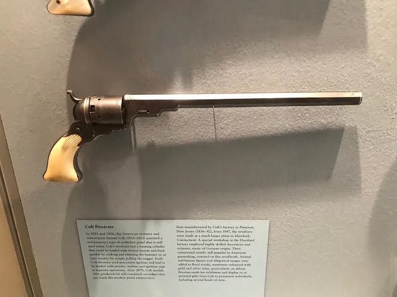
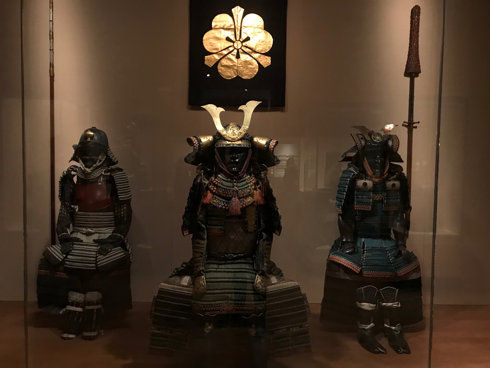
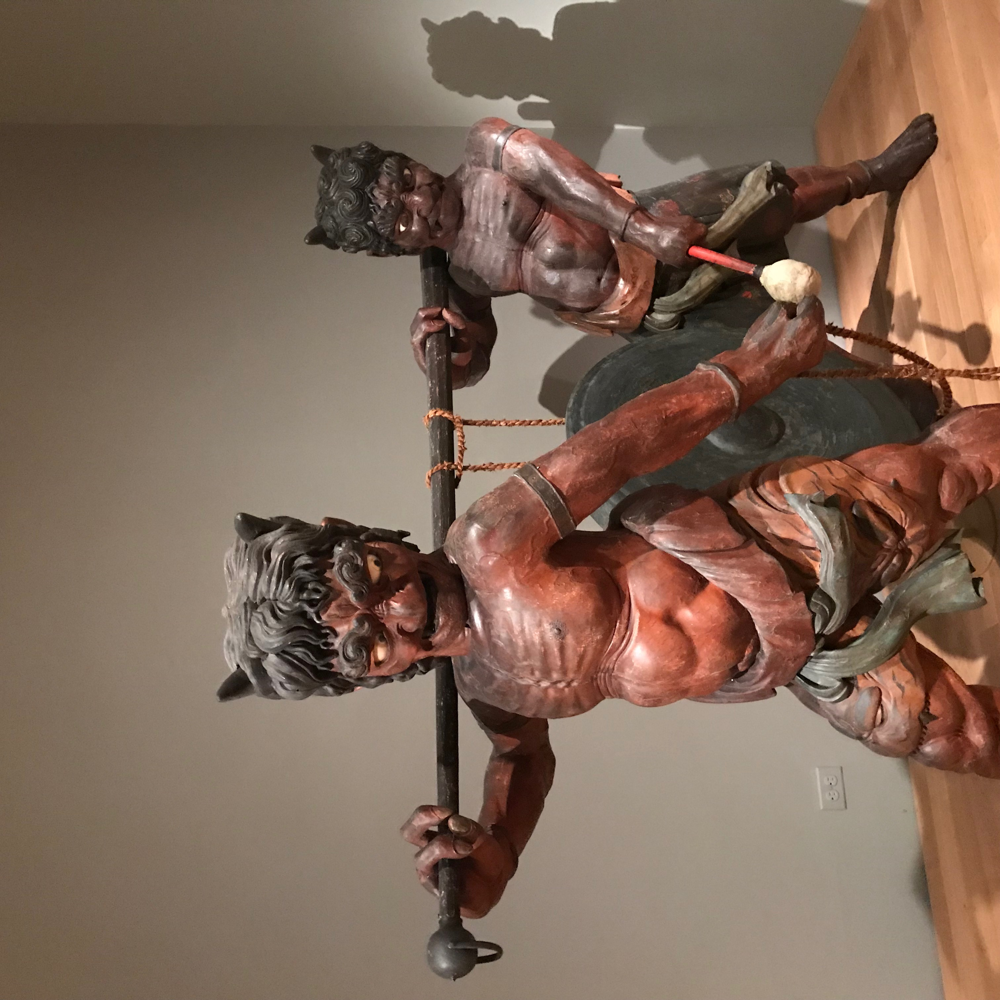

During Spring break i went to the MET museum by 5th avenue with a very special loved one and we got to experience the different exhibitions the museum had to offer
The Metropolitan Museum of Art of New York City, also known as "the Met" is the largest art museum throughout the United States. Boasting an estament of 6,953,927 visitors to its three locations in 2018, making it was the third most visited art museum in whole the world. Its permanent collection contains over two million difeerent and unique type of works,The main building, by Central Park along Museum Mile in Manhattan's Upper East Side is one of the world's largest art galleries. However a much smaller location, The Cloisters at Fort Tryon Park by Upper Manhattan, contains an extensive collection of art, architecture, and artifacts from Medieval Europe.

Here below is one of the millions of weapon that have been used in war throughout time and has been preserved in the museum to show us the different type of weapns that were used throughout the ages
  For me The MET museum is a very welcoming museum to go to and since it's the biggest art museum in the country there is no shortage of any fine art and sculptures you can discover and even to this the day The MET is always evolving and innovating its different exhibitions to attract new and even the veterans of the museum for instance when i went to The MET during April i was fascinated by all the different art pieces they had for display and there was definitely no shortage of art anywhere I first started by the ancient Egypt area where there was so many fascinating things to see from the mummified bodies to the different type of jewelry they wore throughout the time period. There was also a lot of interesting notes on the architectural designs they have invented throughout this very early time period of humanity.
There are a lot of reasons why you should go to The MET for all the different shows they have for example last week the at The Met there was the world famous MET Gala event where all these famous people gather together to donate money to the museum and, because it's an event held at an art museum organized by the highest high fashion figure in the world , the clothes worn by the attendees are some or if not some of the bst the fashion world has to offer from anything that will stand out any of these outfits can be even see as high end pieces of art